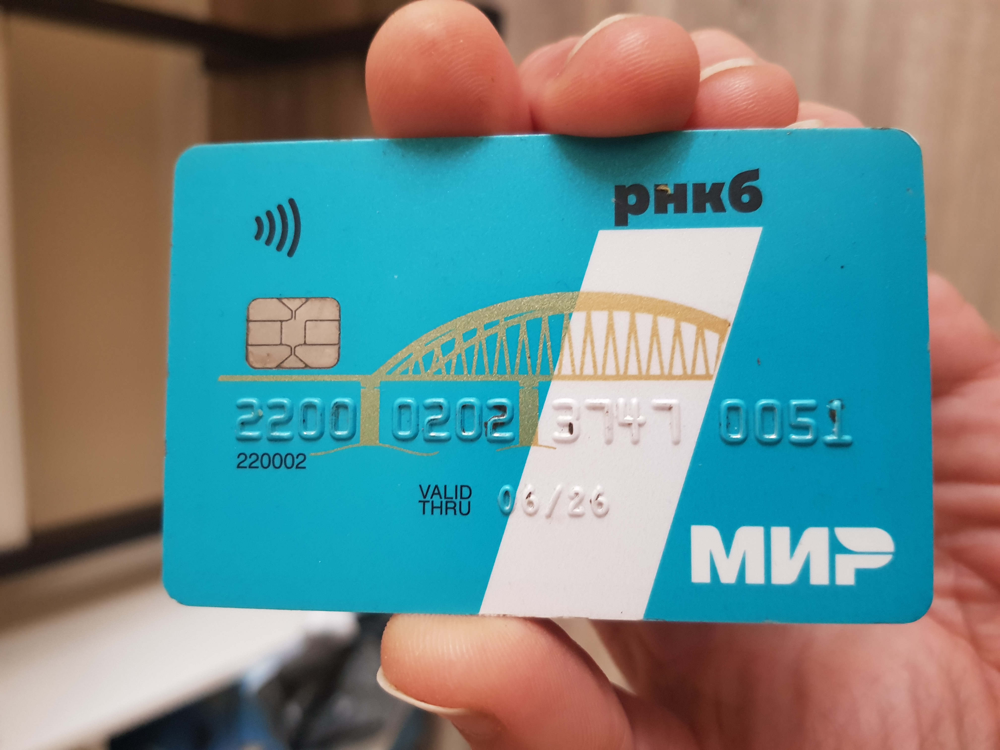
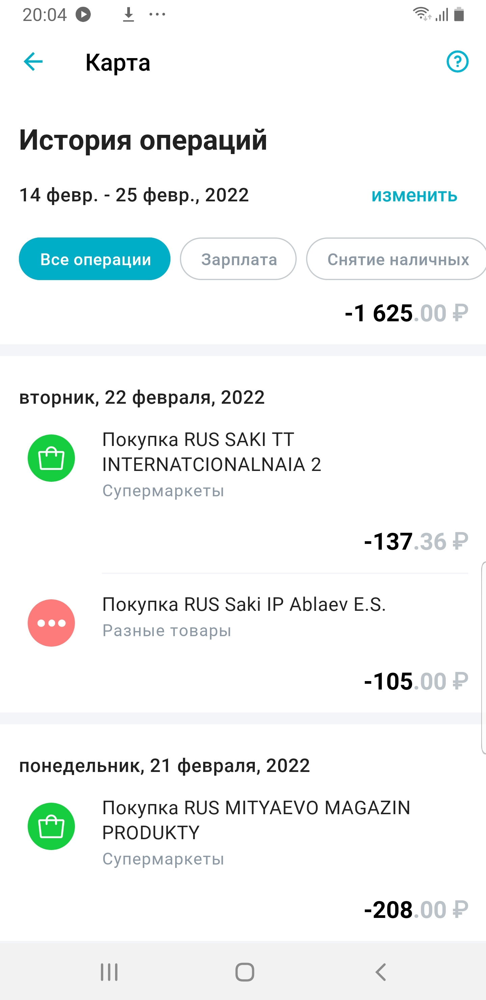
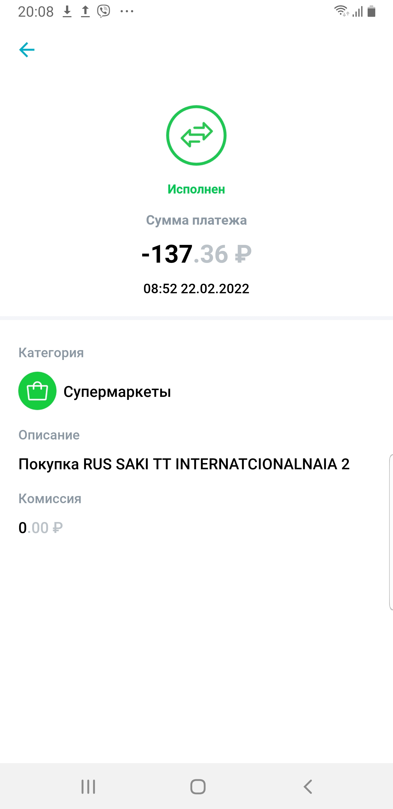

Hier habe ich das Ziel gestellt, hinzuweisen, dass ich
mich zum "Stichtag" auf der Krim befand.
Unten biete ich einen Beweis.
Obwohl es nicht eksakt um
den 24. Februar 2022 handelt,
liegt das Datum nur vor zwei Tage zudem.
Alle Bildschirmfotos sind aus der App für russische Bankkarte genommen.
Ich habe die Möglichkeit online ins mein Konto hineinzugelangen,
so lassen diese Bildschirmfotos sich leicht zu bestätigen.

Da ist meine Karte, sie gehört zum russischen System 'Mir', die Bank heißt
RNCB, die Karte ist mit der Telefonnummer
+7(978)1290188 verbunden.

Screenshot 1.
Wir sehen zwei Einkäufe am 22. Februar 2022.
Weitere Einkäufe beginnen sich am 25. Februar 2022, also sind für die Sache kaum interessant.

Screenshot 2.
Betrachten wir den letzten Einkauf näher.
Wir sehen, dass er sich um 8:52 in unserer Kreisstadt Saky ereignete.